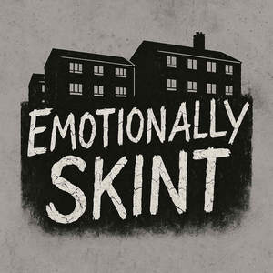

Trade Mark Journal No.2025/019 9 May 2025
UK00004194582 25 April 2025 (16,18,25)

- Class 16
- Books; Non-fiction books; Series of non-fiction books; Manuscript books; Printed books; Covers for books; Coloring books; Educational books; Wirebound books; Reference books; Commemorative books; Information books; Resource books; Exercise books; Sticker books; School writing books; Agenda books; Sketch books; Covering materials for books; Appointment books; Books featuring fantasy stories; Pocket books [stationery]; Cardboard badges; Paper badges; Paper name badges; Name badges [office requisites]; Badge holders of plastic [office requisites]; Badge holders [office requisites]; Retractable reels for name badge holders [office requisites]; Clips for name badge holders [office requisites]; Stickers; Decorative stickers for helmets; Name badge holders [office requisites]; Printed emblems; Decorative stickers for cars; Paper emblems; Printed emblems [decalcomanias]; Bumper stickers; Decals; Car stickers; Albums for stickers.
- Class 18
- Tote bags; Toiletry bags; Bags [envelopes, pouches] of leather, for packaging; Makeup bags; All-purpose carrying bags; Wash bags for carrying toiletries; Gym bags; Towelling bags; Cosmetic bags; Hand bags; Make-up bags; Book bags.
- Class 25
- Short-sleeved shirts; Short-sleeved T-shirts; Turtleneck shirts; Polo shirts; Collared shirts; T-shirts; Open-necked shirts; Dress shirts; Knit shirts; Aloha shirts; Tennis shirts; Casual shirts; Shirts for suits; Football shirts; Tee-shirts; Fishing shirts; Sweat shirts; Printed t-shirts; Sport shirts; Pique shirts; Mock turtleneck shirts; Night shirts; Sports shirts; Sleep shirts; Hooded sweat shirts; Moisture-wicking sports shirts; Sweatshirts; V-neck sweaters; Hoodies; Polo knit tops; Sleeveless pullovers; Hooded sweatshirts.
Tanya Akehurst